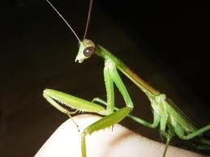

Z-index를 이용하여 이미지 위에 글씨를 보이게 할 수 있다.
바퀴목 사마귀아목 혹은 바퀴상목 사마귀목 곤충의 총칭.[3][4] 몸이 크고 갈색 또는 녹색이다. 앞다리가 낫처럼 구부러져 먹이를 잡아먹기에 편리하며 겉으로 보이는 이미지처럼 상당히 공격적이다. 이러한 생김새를 보면 짐작할 수 있지만 육식을 즐겨하는 곤충이다. 현생하는 곤충치곤 꽤 늦게 등장한 곤충으로, 대다수의 곤충이 고생대 페름기 무렵에 등장한 것에 비해 사마귀는 백악기에 등장했다. 앞발이 인간의 팔처럼 먹이를 잡고, 하는데 대부분 팔이라 하는 사람도 있지만, 구조상으로 앞발에 가깝다. 여러 해충을 잡아먹어주는 덕분에 익충으로 분류된다. 수명은 태어나는 순간부터 죽을때까지 합쳐서 7개월~1년 정도로 풀벌레중에서는 수명이 긴편이다.
